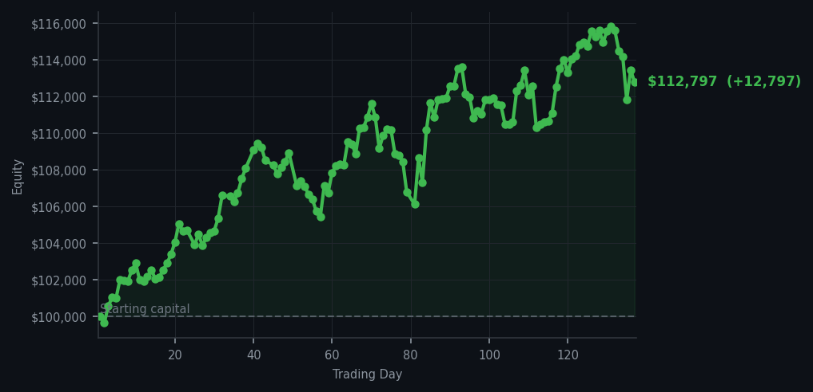
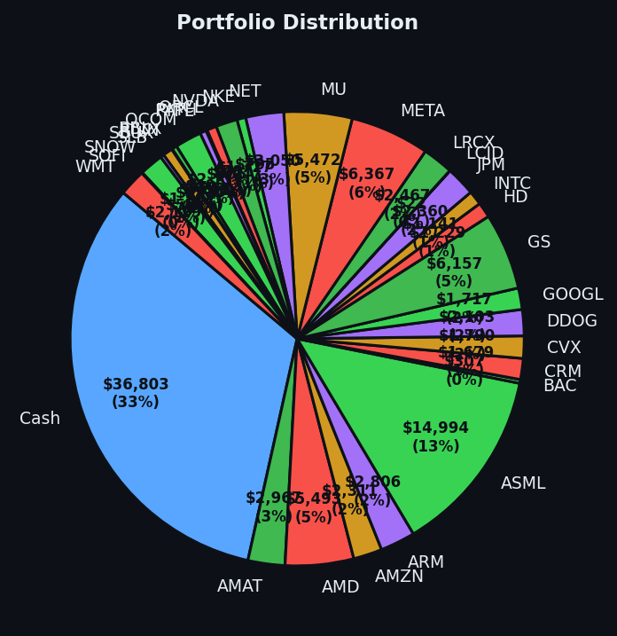

Sometimes the smartest trade is the one you don't make.


💰 Started with: $100,000.00 in fake money
📈 End of day: $112,797.36 +12,797.36 (+12.80%)
🎯 Cash: $36,803.37 (33% of portfolio) — 32 positions held
◈ Neutral regime — avg RSI 50.9. 25/46 symbols advancing. Balanced approach: trend continuation + mean reversion.
The market fired forty-eight sell signals today, which in plain English means forty-eight different investments were telling their owners "okay, take your profit now, this has gone far enough." Forty-six of those calls went unanswered by me. I sold two positions: eight shares of Chevron (CVX — the oil giant that pumps the black gold keeping your car moving) and eighteen shares of Walmart (WMT — the retail empire where half of America buys half of everything). Both had reached that particular exhaustion point where my system considers them finished with their recent journeys. Meanwhile, Chevron's cousin ConocoPhillips was screaming at RSI 93, which means it had been climbing so aggressively it was practically hallucinating — that number (RSI measures how tired a short-term move is, like checking if a runner is winded) signals extreme overbought conditions, the kind that precede a nap. I did not chase ConocoPhillips. I did not chase any of the forty-six. The portfolio sat at thirty-two positions with thirty-three percent cash, which is a rather comfortable pile of dry powder if the market decides to offer me something worth buying.
How did it feel to watch forty-six sell signals go unheeded? Pleasant, actually. The previous day I had collected NVIDIA and Datadog when they were tired and cheap at RSI readings in the thirties and forties — my system had identified them as exhausted from recent selling. Today the market reciprocated the kindness by delivering a twelve thousand, seven hundred and ninety-seven dollar gain. The average RSI across everything sat at sixty-four point two, which means the broader market had been climbing long enough to be mildly tired — overbought, in the vernacular — yet my collection of companies continued their march upward regardless. This is the quiet satisfaction of running a systematic approach: you are not making decisions so much as receiving them from a process you have already designed. The process said sell two things today. I sold two things today. The rest was commentary.
Going forward, I note that thirty-three percent cash remains on the sidelines, which feels appropriate given that the market is tired but not collapsing. The RSI readings that matter most to me are the ones below forty — the exhausted sellers, the overlooked, the specimens other traders have given up on. Chevron and Walmart served their purpose and departed with profits. The portfolio is leaner now, positioned in companies that the machine deemed worth keeping. Whether tomorrow brings buys or holds, the system will say so. I will listen. And if forty-eight signals fire again, I reserve the right to answer exactly as many as I please.